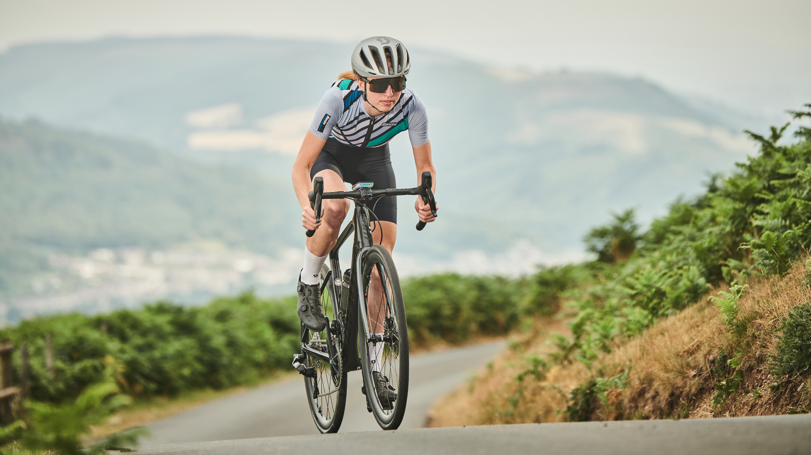
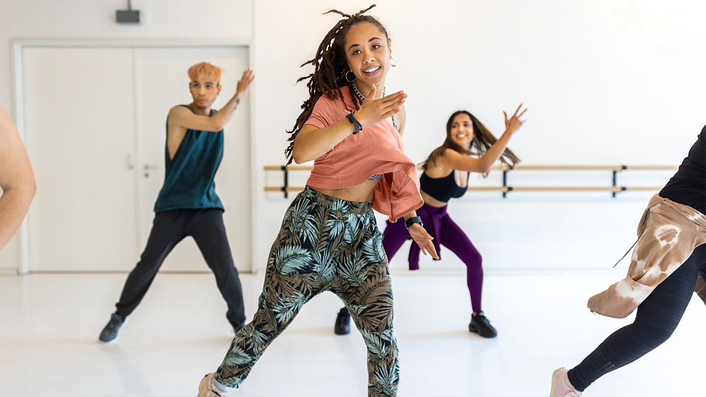
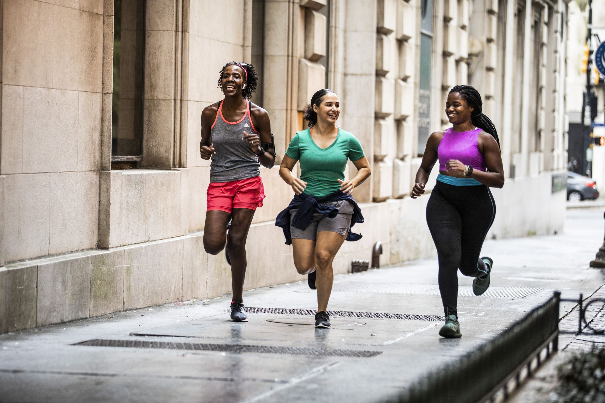
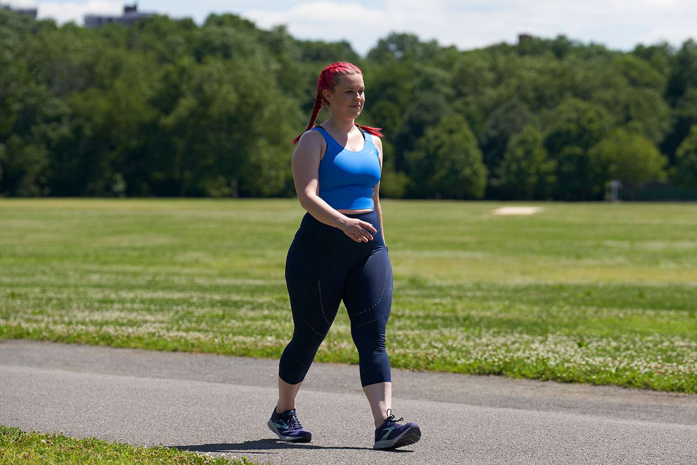

Aerobic Exercises
Aerobic exercises are great for improving cardiovascular health, burning calories, and increasing endurance. Below are some common aerobic exercises, the calories you can burn, and how to perform them.
Exercises and Calories Burned
- Cycling - Burns approximately 600 calories per hour.
- Dancing - Burns approximately 500 calories per hour.
- Hiking - Burns approximately 550 calories per hour.
- Running - Burns approximately 650 calories per hour.
- Swimming - Burns approximately 700 calories per hour.
- Walking - Burns approximately 300 calories per hour.
How to Perform Each Exercise
Cycling

Instructions:
- Start with a proper bike fitting to ensure comfort and efficiency.
- Warm up for 5-10 minutes at a low intensity.
- Gradually increase your pace to a moderate level.
- Maintain a steady pace, and vary the intensity by adjusting gears or resistance.
- Cool down for 5-10 minutes at a low intensity.
Tips:
- Wear a helmet and follow traffic rules if cycling outdoors.
- Keep your back straight and avoid leaning too far forward.
Back to top
Dancing

Instructions:
- Choose a type of dance you enjoy (e.g., Zumba, hip-hop, ballroom).
- Warm up with some light movements or stretching.
- Follow a dance routine or freestyle to your favorite music.
- Keep moving and try to maintain a moderate to high intensity.
- Cool down with some slow movements or stretching.
Tips:
- Stay hydrated and take breaks as needed.
- Focus on having fun and moving to the rhythm.
Back to top
Hiking

Instructions:
- Choose a hiking trail that matches your fitness level.
- Wear comfortable hiking shoes and appropriate clothing.
- Warm up with some light walking and stretching.
- Start at a steady pace and gradually increase your speed.
- Take breaks and stay hydrated during your hike.
- Cool down with some light walking and stretching after your hike.
Tips:
- Carry a map, water, and snacks.
- Be aware of your surroundings and follow trail markers.
Back to top
Running

Instructions:
- Warm up with a brisk walk or light jog for 5-10 minutes.
- Start running at a comfortable pace.
- Maintain a steady pace and focus on your breathing.
- Gradually increase your speed if comfortable.
- Cool down with a slow jog or walk for 5-10 minutes.
Tips:
- Wear proper running shoes to avoid injury.
- Stay hydrated and listen to your body.
Back to top
Swimming

Instructions:
- Warm up with some light swimming or water exercises.
- Choose a stroke you are comfortable with (e.g., freestyle, breaststroke).
- Swim at a steady pace and focus on your technique.
- Alternate between different strokes to work various muscle groups.
- Cool down with some light swimming or water exercises.
Tips:
- Ensure you are swimming in a safe environment.
- Stay hydrated, as swimming can be deceptively draining.
Back to top
Walking

Instructions:
- Warm up with some light walking and stretching.
- Start walking at a comfortable pace.
- Maintain a steady pace and focus on your posture.
- Gradually increase your speed if comfortable.
- Cool down with a slow walk and stretching.
Tips:
- Wear comfortable shoes to support your feet.
- Stay hydrated and take breaks if needed.
Back to top
Back to main page